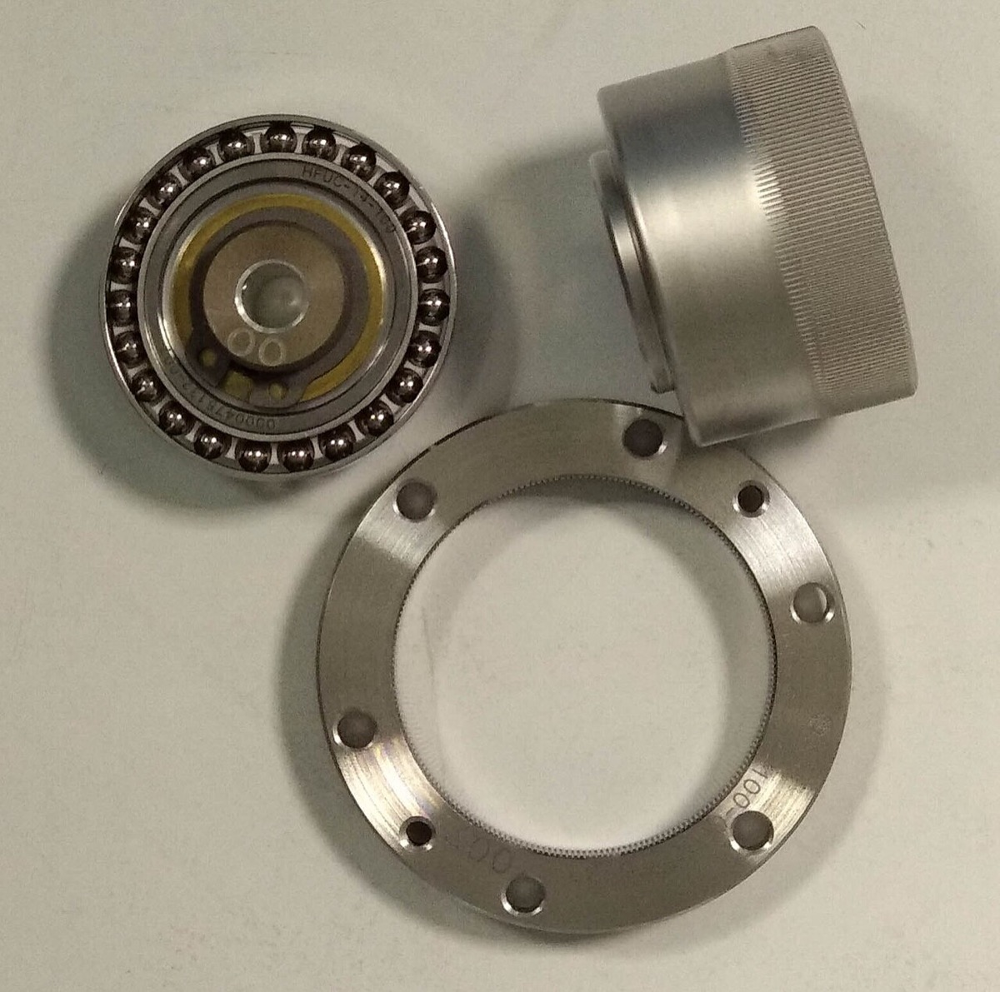
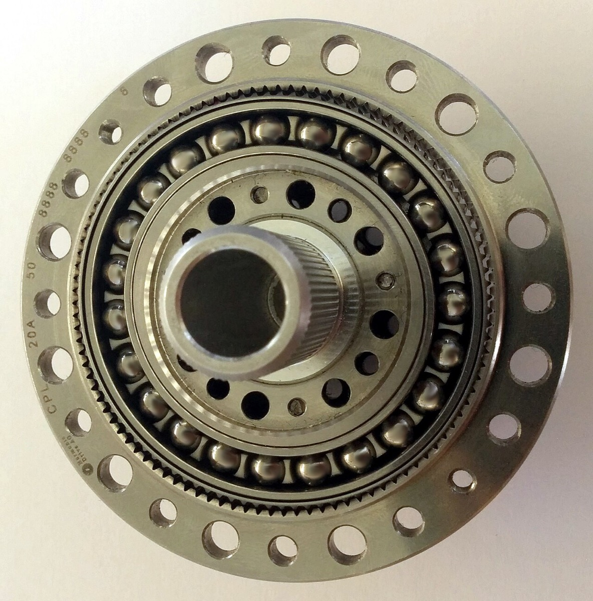
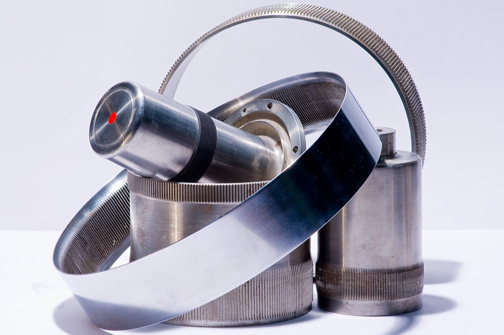
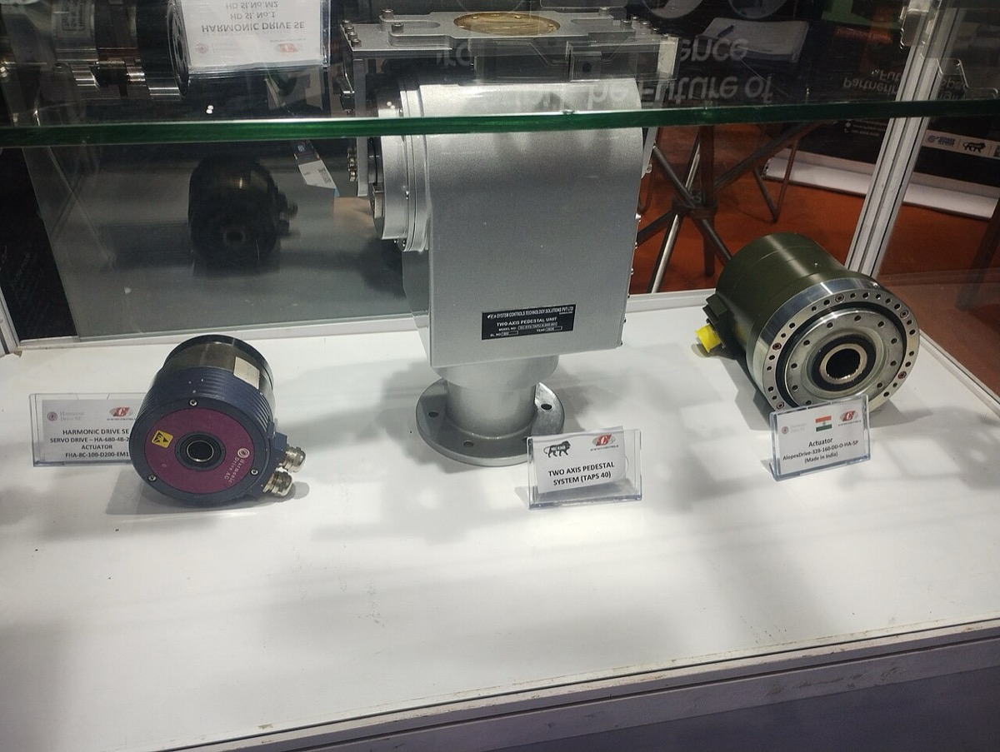

AnyMindと識学に限定すると、売上分母がある上場評価のPSRは1倍前後へ圧縮しうる。非上場の高評価を運用指標で説明する仮説と、部品シェア開示が参入障壁を予測するかを検証する。自動化率との比較は一次統計が無く判定不能である。一般の上場市場への外挿はしない。
産業の話をするとき、多くの人は「この仕事はAIに置き換わるか」という問いから入る。この入り方では、誰が利益を取り誰が退場するかを特定できない。自動化率が高い工程を持つ会社が沈み、自動化と無関係に近い会社が寡占を取る事例が並ぶ、という観察はある。しかし、自動化率と参入障壁のどちらが市場構造を決めるかを、産業別の自動化率一次統計と突き合わせて検証するには至っていない。したがってその命題は本章では判定不能である。
本章が検証するのは次の3点である。第1に、AnyMindと識学に限定したPSR圧縮。第2に、売上非開示の非上場ラウンドを運用指標で説明する仮説の可否。第3に、部品シェアの高開示が参入障壁を予測するかである。
読者と判断：AIコンサルの評価では、AnyMindと識学で確認したPSR圧縮を先に置く。非上場ラウンドを運用指標だけで正当化する仮説は、売上が開示されるまで判定不能として扱う。部品の高シェア開示を障壁と読むのは、同一母数の独立シェア系列が無い限り判定不能として扱う。
分解：お金の流れは人月・成果連動・ライセンスに分かれる。利得の帰属は、売上分母がある上場ではPSR圧縮として観測される。売上分母が無い非上場では運用指標が公開変数になるが、評価額の因果は確定できない。物理的制約は減速機・サーボなどの部品である。部品の高シェアが障壁になるかは、同一母数での競争結果と単価で測る。
ここでの問いは次である。AnyMindと識学に限定したとき、時価総額を直近通期売上で割ったPSRがどこまで圧縮されるか。一般の上場銘柄や他の人月型銘柄は対象外である。as_of は特記のない限り 2026-09-25 である。時価総額は（期末発行済株式数−自己株式数）×東証終値で計算し、売上は各社の決算短信または有価証券報告書の連結売上を使う。
計算の入力は次のとおりである。株価は東証終値（Yahooファイナンスが配信する取引所価格）。発行済株式数と自己株式数、売上は各社の決算短信または有価証券報告書である。二次集計サイトのPSR欄は使わない。
| 会社 | 時点 | 終値 | 発行済−自己株式 | 時価総額 | 直近通期売上 | PSR | 出典 |
|---|---|---|---|---|---|---|---|
| AnyMind | 2023-03-29（公開価格） | 1,000円 | 56,986,200株 | 569.86億円 | 247.9億円（2022年12月期） | 2.30倍 | 会社IR、上場日決算情報（JPX） |
| AnyMind | 2025-12-30（期末） | 607円 | 59,759,950株 | 362.7億円 | 573.0億円（2025年12月期） | 0.63倍 | 2025年12月期決算短信（発行済61,009,950・自己株式1,250,000・売上57,300百万円）。終値は東証（Yahooファイナンス配信） |
| AnyMind | 2026-03-30（上場3年経過直後） | 405円 | 60,136,700株 | 243.6億円 | 573.0億円（2025年12月期） | 0.43倍 | 株式数は2026年12月期1Q決算短信（発行済61,386,700・自己株式1,250,000、2026年3月末）。終値は東証（Yahooファイナンス配信）。2026-03-29は休日のため翌営業日 |
| AnyMind | 2026-09-25（as_of） | 801円 | 59,512,900株 | 476.7億円 | 573.0億円（2025年12月期） | 0.83倍 | 株式数は2026年12月期中間決算短信（発行済61,400,200・自己株式1,887,300、2026年6月末）。終値は東証（Yahooファイナンス配信） |
| 識学 | 2021-02-24 | 2,676円 | 7,474,868株 | 200.0億円 | 25.06億円（2021年2月期） | 7.98倍 | 2021年2月期決算短信（発行済7,534,500・自己株式59,632・売上2,506百万円）。終値は東証（Yahooファイナンス配信）。同日高値は2,805円 |
| 識学 | 2026-02-27（期末近傍） | 845円 | 8,413,975株 | 71.1億円 | 65.37億円（2026年2月期） | 1.09倍 | 2026年2月期決算説明、有価証券報告書（発行済9,138,996・自己株式725,021・売上6,536百万円）。終値は東証（Yahooファイナンス配信） |
識学は2019-02-22に東証マザーズ（現グロース）へ上場した。2021-02-24終値ベースで7.98倍だったPSRは、上場から約7年後の2026-02-27近傍で1.09倍である。AnyMindは2023-03-29上場である。as_of 2026-09-25時点では上場から3年を超えており、3年経過直後の営業日2026-03-30終値ではPSR 0.43倍、as_of当日は0.83倍である。分母はいずれも2025年12月期の連結売上573.0億円である。反証条件の「上場から3年以上経過しても3倍超」は、両社とも満たされない。AnyMindと識学の両方について、上場から3年経過後のPSRが1倍前後へ圧縮されたという主張を支持できる。一般市場や他銘柄への外挿はしない。終値の配信経路はYahooファイナンスであり、取引所の生データそのものではない点を明記する。
Distyl AI は 2025年9月23日（米東部）に 1億7,500万ドル調達、評価額18億ドルを発表した。一次リリースに売上高、ARR、粗利率の記載はない。記載される指標はエンドユーザー1億2,000万人超、顧客側の営業影響が累計で数億ドル規模、本番稼働率100%である 出典。Crunchbase News は売上の倍率変化（2024年に5倍・2025年は8倍の見込み）を記すが絶対額は示していない（報道・single-source） 出典。Channel Dive のインタビューでは、プロジェクト料金の一部を顧客目標の達成に連動させ、継続はプラットフォームのライセンスだと説明している（報道） 出典。
比較仮説は次である。評価額18億ドルは、前節の上場銘柄が示した高PSR帯の延長ではなく、一次発表が並べた運用指標への支払いである。外れる可能性は実際にある。売上が開示された時点で暗示PSRが1倍前後に収まれば、運用指標は情報の非対称を補うための代理表示にすぎず、潜在の説明変数は売上倍率だったことになる。
現状で言えることと言えないことを分ける。言えるのは、一次発表の指標セットに売上が無く、運用指標が公開変数になっていることである。言えないのは、運用指標が評価額を因果として説明する命題である。倍率枠との優劣を測るには分母が要る。したがって判定は判定不能である。役務とライセンスの構成比や推定ARRの二次推定は企業の章 011_company/chapters/05_services-to-product.html に委譲する。
評価の次に見るのは部品層である。問いは「どのKPIに数字が書いてあるか」ではない。開示された高シェアが、同一母数での参入を阻むかを予測できるかである。




| 指標 | 値 | 母数・定義 | 時点 | 出典 |
|---|---|---|---|---|
| 精密減速機の世界シェア | 約60%（自社推定） | 中型から大型の産業用ロボット関節向け精密減速機 | 会社サイト掲載（取得2026-09-25） | Nabtesco |
| 精密減速機売上高 | 669億円 → 786億円 | ナブテスコ決算説明の精密減速機売上 | 2024年12月期 → 2025年12月期 | FY2025決算説明 |
| コンポーネント営業利益率 | 3.9% → 6.8% | コンポーネントソリューション事業（精密減速機を含む） | 2024年12月期 → 2025年12月期 | 同上、決算短信 |
| ACサーボドライブ世界シェア | 16%（自社推定） | AC servo drive 世界市場 | FY2024 | Yaskawa |
会社開示だけを見ると、シェア約60%の主張は維持され、精密減速機売上は増えた。コンポーネントの営業利益率も3.9%から6.8%へ回復した。ただし同社のトランスポート事業の営業利益率は13.5%（2025年12月期）であり、部品の高シェアは同社内でも最高の利得層ではない。障壁が利得を独占するという読みは、この比較だけでは支持できない。
同一母数（中大型産業用ロボット関節向けの世界市場）について、第三者の時系列シェアは取得できなかった。中国のRV減速機市場では、ナブテスコの数量シェアが2020年ごろの5割超から2024年ごろの3割台へ下がったとする二次整理がある（報道・調査レポート。母数は中国国内の数量であり、ナブテスコ開示の世界・中大型関節とは一致しない） 出典。これは障壁仮説の反証候補になりうるが、母数が違うため棄却条件を満たさない。
精密減速機の平均販売単価の一次開示も無い。売上増が数量増なのか単価維持なのかを分離できない。したがって「約60%開示＝参入障壁」という予測は、現状では判定不能である。安川のサーボ16%は母数が広く、寡占の予測命題としては弱い。ひずみ波歯車のHDSは数値シェアを開示していない。
売上分母がある上場2社では、PSR圧縮が売り手の評価上限を抑える方向に働く。売上分母が無い非上場ラウンドでは、運用指標が公開変数になるが評価額の因果は確定できない。部品では、高シェア開示を持つ側が障壁候補として残るが、独立シェアと単価が無い限り利得の帰属は確定できない。coding toolの厚い層は切替率の一次開示が来るまで判定不能である。
主張の検証で残った論点だけを挙げる。